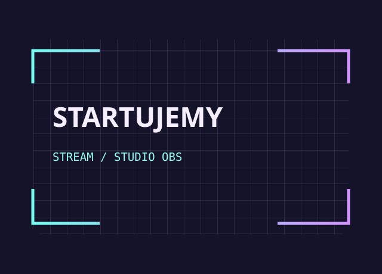

Starting Soon
Startujemy za chwilę
Otwórz źródło OBSPakiet 1920 × 1080
Przezroczyste nakładki OBS. Wybierz scenę, skopiuj URL i dodaj go jako źródło przeglądarkowe.
Wybierz nakładkę
Startujemy za chwilę
Otwórz źródło OBSZaraz wracam
Otwórz źródło OBSDzięki za oglądanie
Otwórz źródło OBSRamka kamery
Otwórz źródło OBSPasek z nickiem
Otwórz źródło OBSAlert
Otwórz źródło OBS?nick=Gracz zmienia podpis. Dla alertu użyj ?alert=follow&nick=Gracz lub ?alert=sub&nick=Gracz.
W przeglądarce przezroczyste obszary przyjmą kolor tła okna.